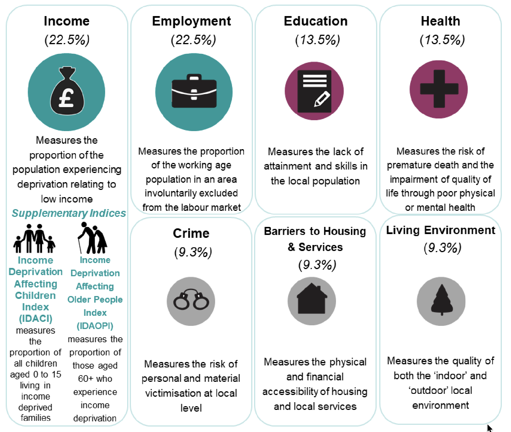
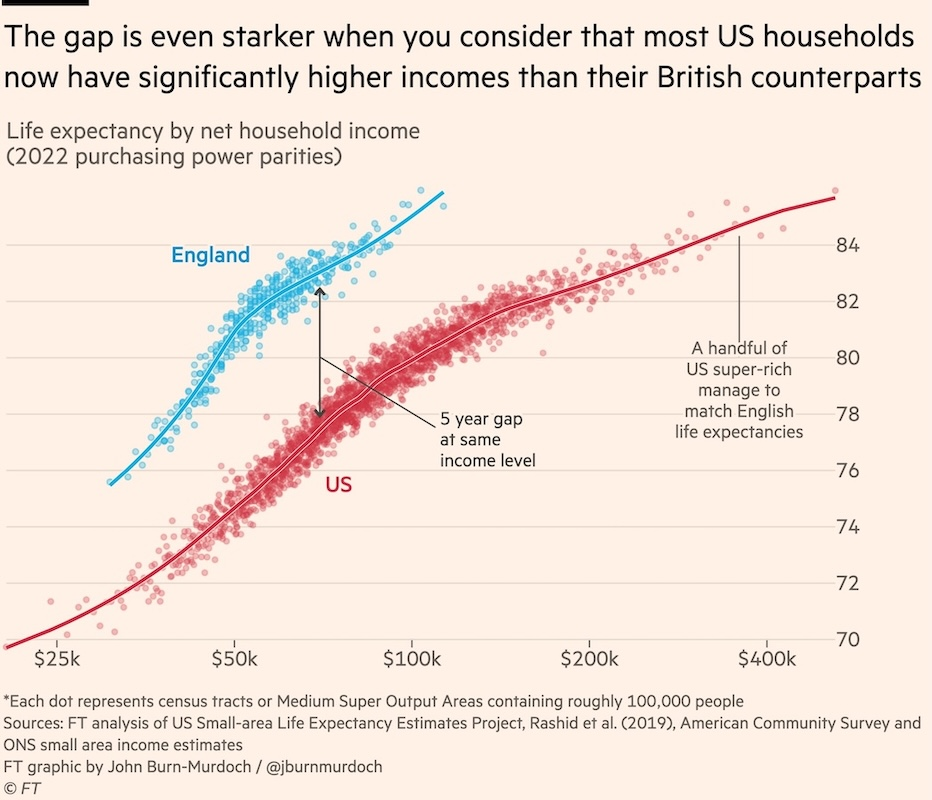

# ============================================================
# Bootstrap cell (works both locally and in Colab)
# ============================================================
import os
import sys
import pathlib
import subprocess
REPO_URL = "https://github.com/ggkuhnle/fb2nep-epi.git"
REPO_DIR = "fb2nep-epi"
cwd = pathlib.Path.cwd()
if (cwd / "scripts" / "epi_utils.py").is_file():
repo_root = cwd
elif (cwd.parent / "scripts" / "epi_utils.py").is_file():
repo_root = cwd.parent
else:
repo_root = cwd / REPO_DIR
if not repo_root.is_dir():
print(f"Cloning repository from {REPO_URL} ...")
subprocess.run(["git", "clone", REPO_URL, str(repo_root)], check=True)
else:
print(f"Using existing repository at {repo_root}")
os.chdir(repo_root)
repo_root = pathlib.Path.cwd()
scripts_dir = repo_root / "scripts"
if str(scripts_dir) not in sys.path:
sys.path.insert(0, str(scripts_dir))
print(f"Repository root: {repo_root}")
print("Bootstrap completed successfully.")2.03 – Health Inequalities: Measuring the Gradient
Learning Objectives: - Understand the Index of Multiple Deprivation (IMD) and how it is constructed - Distinguish between life expectancy and healthy life expectancy - Understand the distinction between absolute and relative measures of inequality - Calculate the Slope Index of Inequality (SII) and Relative Index of Inequality (RII) - Interpret concentration curves and concentration indices - Apply these measures to dietary intake and nutrition-related health outcomes
1 1. Introduction: Why Measure Inequalities?
Average population health can improve while inequalities widen. Consider:
- Life expectancy in England increased for all groups between 2001-2019
- But the gap between the most and least deprived areas also increased
If we only track averages, we miss this divergence. Health inequality metrics help us:
- Describe the current distribution of health across social groups
- Monitor whether policies are reducing or widening gaps
- Target interventions toward those in greatest need
1.1 The Marmot Curve
Health follows a gradient — it’s not simply that the poorest are unhealthy. Each step up the socioeconomic ladder is associated with better health outcomes.
2 2. Setup
import pandas as pd
import numpy as np
import matplotlib.pyplot as plt
from scipy import stats
from ipywidgets import FloatSlider, VBox, Output
import ipywidgets as widgets
from IPython.display import display, HTML
from pathlib import Path
import openpyxl
from epi_utils import (
calculate_sii, calculate_rii, calculate_concentration_index,
plot_concentration_curve, INEQUALITY_EXAMPLE_DATA, fit_sii_rii
)
# ————— Paths —————
DATA_DIR = Path("../data")
IMD_CSV = DATA_DIR / "IoD2019_ranks.csv"
LE_CSV = DATA_DIR / "le_imd.csv"
hse_path = DATA_DIR / "HSE-2022-Overweight-and-obesity-tables.xlsx"
OWID_path = DATA_DIR / "le_gdp.csv"
gini_path = DATA_DIR / "gini.csv"
plt.style.use('seaborn-v0_8-whitegrid')
plt.rcParams['figure.figsize'] = [10, 6]
np.random.seed(42)
print("Libraries loaded successfully.")3 3. The Index of Multiple Deprivation (IMD)
3.1 What is the IMD?
The Index of Multiple Deprivation (IMD) is the official measure of relative deprivation for small areas in England. It ranks every Lower Layer Super Output Area (LSOA) — approximately 32,844 areas, each containing around 1,500 people.
3.2 The Seven Domains of Deprivation
| Domain | Weight | What it measures |
|---|---|---|
| Income | 22.5% | Proportion of population on low income |
| Employment | 22.5% | Proportion involuntarily excluded from work |
| Education | 13.5% | Lack of attainment and skills |
| Health & Disability | 13.5% | Premature death and impairment |
| Crime | 9.3% | Risk of victimisation |
| Barriers to Housing | 9.3% | Physical and financial accessibility |
| Living Environment | 9.3% | Indoor and outdoor environment quality |

(https://assets.publishing.service.gov.uk/media/5d8e26f6ed915d5570c6cc55/IoD2019_Statistical_Release.pdf)
3.3 Important Notes
- Relative, not absolute: IMD ranks areas relative to each other
- Area-level, not individual: Not everyone in a deprived area is deprived (ecological fallacy)
- England only: Scotland, Wales, and Northern Ireland have separate indices
# IMD domain weights visualisation
imd_domains = pd.DataFrame({
'Domain': ['Income', 'Employment', 'Education', 'Health & Disability',
'Crime', 'Barriers to Housing', 'Living Environment'],
'Weight (%)': [22.5, 22.5, 13.5, 13.5, 9.3, 9.3, 9.3]
})
fig, ax = plt.subplots(figsize=(10, 6))
colors = plt.cm.Set3(np.linspace(0, 1, 7))
ax.pie(imd_domains['Weight (%)'], labels=imd_domains['Domain'],
autopct='%1.1f%%', colors=colors, startangle=90)
ax.set_title('Index of Multiple Deprivation: Domain Weights', fontsize=14)
plt.tight_layout()
plt.show()
print("Note: Income and Employment together account for 45% of the overall IMD.")3.4 Exploring IMD Maps
Key Resources:
- ONS Interactive IMD Map — Explore deprivation by LSOA
- CDRC IMD Geodata Pack — Download IMD data
- PHE Fingertips — Health outcomes by deprivation
# Display link to interactive IMD map
display(HTML('''
<div style="text-align: center; padding: 20px; background-color: #f5f5f5; border-radius: 10px;">
<h3>Index of Multiple Deprivation 2019 - England</h3>
<p><a href="https://dclgapps.communities.gov.uk/imd/iod_index.html" target="_blank">
Click here to explore the interactive IMD map →
</a></p>
<p style="font-size: 12px; color: #666;">Source: MHCLG (2019)</p>
</div>
'''))
# ————— Load the full CSV —————
df = pd.read_csv(IMD_CSV)
# ————— Extract LA-level summary —————
# Select only the columns we need
df_la = (
df[[
"Local Authority District name (2019)",
"Index of Multiple Deprivation (IMD) Rank (where 1 is most deprived)",
"Index of Multiple Deprivation (IMD) Score"
]]
.dropna()
# Rename for convenience
.rename(columns={
"Local Authority District name (2019)": "Local Authority",
"Index of Multiple Deprivation (IMD) Rank (where 1 is most deprived)": "IMD Rank",
"Index of Multiple Deprivation (IMD) Score": "IMD Score"
})
.drop_duplicates()
# Sort so rank=1 is top
.sort_values("IMD Rank")
.reset_index(drop=True)
)
print("Loaded IMD 2019 LA ranks:")
#
# Most and least deprived local authorities
la_deprivation = pd.DataFrame({
'Local Authority': ['Blackpool', 'Knowsley', 'Hull', 'Middlesbrough', 'Liverpool',
'Hart', 'Wokingham', 'Surrey Heath', 'S. Cambridgeshire', 'Elmbridge'],
'Rank (of 317)': [1, 2, 3, 4, 5, 317, 316, 315, 314, 313],
'Category': ['Most deprived'] * 5 + ['Least deprived'] * 5
})
print("Most and Least Deprived Local Authorities (IMD 2019)")
print("=" * 60)
display(la_deprivation)Most local authorities cluster across the distribution; only a few lie at the extremes. So where are we?
df_plot = df_la.sort_values("IMD Score").reset_index(drop=True)
# Boolean mask for Wokingham
is_wokingham = df_plot["Local Authority"] == "Wokingham"
# Locate Wokingham
wk_idx = df_plot.index[df_plot["Local Authority"] == "Wokingham"][0]
wk_score = df_plot.loc[wk_idx, "IMD Score"]
# X positions (one per authority)
x = np.arange(len(df_plot))
plt.figure(figsize=(10, 5))
# All authorities (background)
plt.bar(
x,
df_plot["IMD Score"],
alpha=0.3
)
# Arrow pointing to Wokingham
plt.annotate(
"Wokingham",
xy=(wk_idx, wk_score),
xytext=(wk_idx, wk_score + 10), # vertical offset
arrowprops=dict(
arrowstyle="->",
linewidth=1.5
),
ha="center"
)
plt.annotate(
"",
xy=(0.95, -0.12),
xytext=(0.05, -0.12),
xycoords="axes fraction",
textcoords="axes fraction",
arrowprops=dict(arrowstyle="->", linewidth=1.2),
)
# End labels
plt.text(
0.02, -0.12, "least deprived",
transform=plt.gca().transAxes,
ha="left", va="center"
)
plt.text(
0.98, -0.12, "most deprived",
transform=plt.gca().transAxes,
ha="right", va="center"
)
# Axis handling
plt.xticks([]) # remove unreadable labels
plt.ylabel("IMD Score")
plt.title("Index of Multiple Deprivation (2019)\nWokingham highlighted")
plt.tight_layout()
plt.show()4 4. Life Expectancy vs Healthy Life Expectancy
4.1 Definitions
- Life expectancy (LE): Average years a newborn would live if current mortality rates persist
- Healthy life expectancy (HLE): Average years expected in “good” or “very good” health
4.2 The Double Burden of Deprivation
The gap between LE and HLE represents years lived in poor health. In deprived areas, people: 1. Die younger 2. Spend a larger proportion of their shorter lives in poor health
le_hle_data = pd.read_csv(LE_CSV)
# Sort in the natural order (most deprived -> least deprived)
le_hle_data = le_hle_data.sort_values("IMD_decile").reset_index(drop=True)
print("Life Expectancy and Healthy Life Expectancy by IMD Decile (England, 2020–2022)")
display(le_hle_data[["IMD_decile", "LE_male", "HLE_male", "LE_female", "HLE_female"]])The State Pension Age is 66 (rising to 67 by 2028). In the most deprived areas, men reach their HLE 14.5 years BEFORE pension age.
pension_age = 66
# X positions
x = np.arange(len(le_hle_data))
width = 0.35
fig, ax = plt.subplots(figsize=(12, 6))
# Colour-blind safe palette (Okabe–Ito)
male_colour = "#0072B2" # blue
female_colour = "#E69F00" # orange
# ---- Male bars ----
ax.bar(
x - width/2,
le_hle_data["LE_male"],
width,
label="Male LE",
color=male_colour,
alpha=0.6,
hatch=""
)
ax.bar(
x - width/2,
le_hle_data["HLE_male"],
width,
label="Male HLE",
color=male_colour,
hatch="//"
)
# ---- Female bars ----
ax.bar(
x + width/2,
le_hle_data["LE_female"],
width,
label="Female LE",
color=female_colour,
alpha=0.6,
hatch=""
)
ax.bar(
x + width/2,
le_hle_data["HLE_female"],
width,
label="Female HLE",
color=female_colour,
hatch="//"
)
# ---- Axes and labels ----
ax.set_xticks(x)
ax.set_xticklabels([f"D{d}" for d in le_hle_data["IMD_decile"]])
ax.set_xlabel("IMD decile (D1 = most deprived)")
ax.set_ylabel("Years")
ax.set_title(
"Life expectancy (LE) and healthy life expectancy (HLE)\n"
"by IMD decile and sex, England (2020–2022)"
)
ax.set_ylim(0, 90)
# ---- Pension age line ----
ax.axhline(
y=pension_age,
linestyle="--",
linewidth=2,
label=f"State Pension Age ({pension_age})"
)
# ---- Legend ----
ax.legend(ncol=2, loc="upper left")
plt.tight_layout()
plt.show()5 5. Measuring Inequality: SII and RII
When comparing D1 vs D10, only two points on the deprivation gradient are used.
This is simple, but it discards information and is sensitive to noise at the extremes.
The Slope Index of Inequality (SII) and Relative Index of Inequality (RII) were designed to do something more principled:
- use all groups (all deciles, quintiles, etc.)
- account for group population size (if groups are unequal)
- summarise the entire social gradient with a single number
- allow comparison across places and time
They are widely used in health inequalities research for precisely these reasons.
6 Slope Index of Inequality (SII)
6.1 What SII measures
SII is an absolute measure of inequality.
It estimates the absolute difference in the outcome between the theoretical extremes of the deprivation distribution:
predicted outcome at the least deprived end minus predicted outcome at the most deprived end
If the outcome is healthy life expectancy (HLE), SII is measured in years.
Example interpretation:
An SII of 18 years for HLE means that, across the deprivation gradient, the fitted difference between the least and most deprived ends is about 18 healthy years.
6.2 Why “theoretical” extremes?
SII does not simply compare observed values in D1 and D10.
Instead, it models deprivation as a continuous gradient from 0 to 1 and estimates outcomes at those endpoints.
This makes SII more stable than a simple top–bottom gap.
7 From categories to a gradient: the ridit score
Deprivation is observed in categories (deciles), but inequality is a gradient concept.
7.1 Step 1: cumulative population position
Assuming equal-sized deciles:
- Decile 1 spans ranks 0.0–0.1
- Decile 2 spans 0.1–0.2
- …
- Decile 10 spans 0.9–1.0
7.2 Step 2: midpoint (ridit)
Each group is assigned the midpoint of its interval:
| Decile | Ridit |
|---|---|
| D1 | 0.05 |
| D2 | 0.15 |
| … | … |
| D10 | 0.95 |
These ridit values represent relative social position and become the x-values in the regression.
If groups differ in population size, midpoints are computed from the cumulative population distribution instead. This is one reason SII is preferred over simple gaps.
8 Regression formulation
The outcome y (e.g. HLE) is regressed on the ridit r:
y = α + βr
- r ∈ [0, 1]
- α: predicted outcome at the most deprived end
- α + β: predicted outcome at the least deprived end
Therefore:
SII = (α + β) − α = β
In a linear model, SII is simply the slope, provided the rank variable runs from 0 to 1.
8.1 Interpretation
- Positive SII: outcome increases with decreasing deprivation (typical for favourable health outcomes)
- Negative SII: outcome higher in more deprived groups
Because SII is absolute, it uses the units of the outcome: - years (LE, HLE) - mmHg (blood pressure) - percentage points (prevalence)
9 Why using all points matters
Using all groups rather than only extremes provides:
9.1 1. Greater stability
Extreme groups can be noisy. A fitted gradient uses all observations.
9.2 2. Representativeness
SII summarises the entire gradient, not just its endpoints.
9.3 3. Population weighting
If group sizes differ, SII can reflect the distribution of people rather than categories.
10 Assumptions behind SII
Approximate linearity
SII is a linear summary. If the gradient is curved, SII still exists but compresses that pattern into a single number.Meaningful ordering
Deprivation categories must be ordinal (IMD satisfies this).Appropriate outcome model
- Continuous outcomes: linear regression
- Rates or proportions: suitable GLMs may be preferable
- Continuous outcomes: linear regression
SII answers:
“What is the best linear summary of inequality across the social gradient?”
# Read the table "as is" (HSE tables are not tidy spreadsheets)
t6 = pd.read_excel(hse_path, sheet_name="Table 6", header=None)
# Quintile labels are on row 3, columns 1..5 in this workbook
quintile_labels = list(t6.iloc[3, 1:6].values)
# Helper: find a row by exact label in column 0
def _row_idx(label: str) -> int:
matches = t6.index[t6[0].astype(str).str.strip().eq(label)]
if len(matches) == 0:
raise ValueError(f"Could not find row label: {label!r}")
return int(matches[0])
# Row indices for obesity prevalence (% Obese) for each sex
row_male_obese = _row_idx("% Obese") # first occurrence is in the Men section
row_women = _row_idx("Women") # marker row; women section starts here
row_female_obese = t6.index[(t6.index > row_women) & (t6[0].astype(str).str.strip().eq("% Obese"))][0]
# Row indices for weighted bases (Men and Women)
row_weighted_bases = _row_idx("Weighted bases")
row_male_weight = row_weighted_bases + 1 # Men
row_female_weight = row_weighted_bases + 2 # Women
# Extract values (columns 1..5 correspond to quintiles)
male_prev_pct = t6.iloc[row_male_obese, 1:6].astype(float).values
female_prev_pct = t6.iloc[row_female_obese, 1:6].astype(float).values
male_weight = t6.iloc[row_male_weight, 1:6].astype(float).values
female_weight = t6.iloc[row_female_weight, 1:6].astype(float).values
# Build tidy dataframe (convert % to proportions)
df = pd.DataFrame({
"quintile_label": quintile_labels * 2,
"sex": ["Men"] * 5 + ["Women"] * 5,
"obesity_prev": np.concatenate([male_prev_pct, female_prev_pct]) / 100.0,
"weighted_base": np.concatenate([male_weight, female_weight]),
})
# Reorder so that ridit = 0 is MOST deprived and ridit = 1 is LEAST deprived.
# In this table the columns run Least -> Most, so reverse within each sex.
def _reorder_most_to_least(group: pd.DataFrame) -> pd.DataFrame:
return group.iloc[::-1].reset_index(drop=True)
df = df.groupby("sex", group_keys=False).apply(_reorder_most_to_least)
# Compute population share within sex (weights sum to 1 within each sex)
df["population_share"] = df["weighted_base"] / df.groupby("sex")["weighted_base"].transform("sum")
# Compute ridit using the cumulative population distribution (weighted)
df["cum_pop"] = df.groupby("sex")["population_share"].cumsum()
df["cum_pop_lag"] = df.groupby("sex")["cum_pop"].shift(1, fill_value=0)
df["ridit"] = (df["cum_pop"] + df["cum_pop_lag"]) / 2
# Calculate SII and RII for each sex and store in results dictionary
results = {}
for sex, group in df.groupby("sex"):
# SII: linear regression of prevalence on ridit
sii_slope, sii_intercept, r_value, p_value, std_err = stats.linregress(
group["ridit"], group["obesity_prev"]
)
# RII: regression on log(prevalence), then exponentiate to get ratio
# RII = predicted prevalence at ridit=1 / predicted prevalence at ridit=0
log_prev = np.log(group["obesity_prev"])
rii_slope, rii_intercept, _, _, _ = stats.linregress(group["ridit"], log_prev)
# RII is the ratio of fitted values at ridit=1 vs ridit=0
# exp(intercept + slope*1) / exp(intercept + slope*0) = exp(slope)
rii = np.exp(rii_slope)
results[sex] = {
"data": group.copy(),
"sii": sii_slope,
"sii_intercept": sii_intercept,
"rii": rii,
"rii_slope": rii_slope,
"rii_intercept": rii_intercept,
"r_squared": r_value ** 2,
"p_value": p_value,
}
display(df)
print("\nSII and RII calculated for each sex (see next cell for visualisation)")fig, ax = plt.subplots(figsize=(10, 6))
x_line = np.linspace(0, 1, 200)
for sex, res in results.items():
g = res["data"]
ax.scatter(g["ridit"], g["obesity_prev"], s=100, label=f"{sex} (observed)")
ax.plot(x_line, res["sii_intercept"] + res["sii"] * x_line,
linewidth=2, label=f"{sex} fit (SII = {res['sii']:.3f})")
for _, row in g.iterrows():
ax.annotate(row["quintile_label"], (row["ridit"], row["obesity_prev"]),
textcoords="offset points", xytext=(0, 10), ha="center")
ax.set_xlabel("Ridit score (0 = most deprived, 1 = least deprived)")
ax.set_ylabel("Obesity prevalence")
ax.set_title("Slope Index of Inequality (SII): adult obesity by deprivation (HSE 2022)")
ax.yaxis.set_major_formatter(plt.FuncFormatter(lambda y, _: f"{y:.0%}"))
ax.legend()
plt.tight_layout()
plt.show()
for sex, res in results.items():
print(f"{sex}: SII = {res['sii']:.3f} (absolute change in prevalence from most to least deprived)")11 Relative Index of Inequality (RII)
RII is the relative counterpart of SII.
Instead of an absolute difference, it expresses inequality as a ratio.
A common formulation:
log(y) = α + βr
Then:
RII = exp(β)
Interpretation: - RII = 1.25 → outcome is about 25% higher at the least deprived end than at the most deprived end (in the fitted gradient)
RII is often preferred for: - prevalence - rates - outcomes naturally interpreted multiplicatively
fig, ax = plt.subplots(figsize=(10, 6))
for sex, res in results.items():
g = res["data"]
ax.scatter(g["ridit"], g["obesity_prev"], s=100, label=f"{sex} (observed)")
ax.plot(x_line, np.exp(res["rii_intercept"] + res["rii_slope"] * x_line),
linewidth=2, label=f"{sex} fit (RII = {res['rii']:.2f})")
for _, row in g.iterrows():
ax.annotate(row["quintile_label"], (row["ridit"], row["obesity_prev"]),
textcoords="offset points", xytext=(0, 10), ha="center")
ax.set_xlabel("Ridit score (0 = most deprived, 1 = least deprived)")
ax.set_ylabel("Obesity prevalence")
ax.set_title("Relative Index of Inequality (RII): adult obesity by deprivation (HSE 2022)")
ax.yaxis.set_major_formatter(plt.FuncFormatter(lambda y, _: f"{y:.0%}"))
ax.legend()
plt.tight_layout()
plt.show()
for sex, res in results.items():
print(f"{sex}: RII = {res['rii']:.2f} (ratio across the gradient, least vs most deprived in fitted model)")12 Summary
We replace deprivation categories by their position in the cumulative population distribution (ridit). We then regress the outcome on this rank. The slope of that regression gives the SII: the predicted absolute difference between the least and most deprived ends of society, using all groups rather than only the extremes.
13 6. Global inequalities: within-country versus between-country gradients
Health inequalities exist at multiple levels:
- Within-country inequalities (the Marmot gradient): differences across deprivation groups within one country.
- Between-country inequalities (global differences): differences in average outcomes between countries.
- Cross-country comparisons at the same income level: the same household income can correspond to different health outcomes in different countries.
The figure below illustrates a striking point: even at comparable (PPP-adjusted) household income, life expectancy differs substantially between England and the USA. This is not primarily an “income problem”; it reflects systems, environments, risks, and social policy.

Source: Financial Times analysis using US Small-area Life Expectancy Estimates Project, American Community Survey, and ONS small area income estimates (as stated in the figure).
13.1 The Preston curve: income and health across countries
At the global level, health also follows a gradient — but it is non-linear.
The Preston curve plots life expectancy against national income (usually GDP per capita adjusted for purchasing power). It shows three key features:
Steep gains at low income
Among poorer countries, small increases in income are associated with large improvements in life expectancy.Diminishing returns at higher income
Beyond a certain point, additional income is associated with much smaller gains in life expectancy.More than income alone
Countries with similar incomes can have markedly different life expectancies, reflecting differences in:- health systems
- education
- public health infrastructure
- social protection and inequality
- health systems
The Preston curve is the global analogue of the Marmot gradient: it emphasises that health improves stepwise with socioeconomic advantage, but not in a simple linear fashion.
# ============================================================
# OWID Preston curve dataset + simple Preston regression
# (Run this cell once; the next two cells only plot.)
# ============================================================
df_owid = pd.read_csv(OWID_path)
YEAR = 2019
df_year = df_owid[df_owid["Year"] == YEAR].copy()
# Keep only real countries (drop aggregates such as "World")
df_year = df_year[df_year["Code"].notna()].copy()
# Identify relevant columns robustly
life_col = [c for c in df_year.columns if "Life expectancy" in c][0]
gdp_col = [c for c in df_year.columns if "GDP per capita" in c][0]
df_year = df_year[["Entity", "Code", "Year", life_col, gdp_col]].dropna().copy()
# Countries to highlight (ISO3 -> short label)
highlight_codes = {
"GBR": "UK",
"USA": "US",
"KWT": "Kuwait",
"UGA": "Uganda",
"TUR": "Turkey",
"JPN": "Japan",
"HKG": "Hong Kong",
"CHN": "China",
"MYS": "Malaysia",
"IND": "India",
"PAK": "Pakistan",
"FRA": "France",
"SVK": "Slovakia",
}
# Fit Preston regression: LE ~ log(GDP)
df_model = df_year.copy()
df_model["log_gdp"] = np.log(df_model[gdp_col])
exclude_codes = ["PSE", "AFG", "SYR", "YEM", "SSD"] # Unreliable data
df_model = df_model[~df_model["Code"].isin(exclude_codes)]
slope, intercept, r_value, p_value, std_err = stats.linregress(
df_model["log_gdp"],
df_model[life_col]
)
df_model["le_pred"] = intercept + slope * df_model["log_gdp"]
df_model["le_resid"] = df_model[life_col] - df_model["le_pred"] # years
print(f"Model: LE = {intercept:.2f} + {slope:.2f}·log(GDP)")
print(f"R² (LE ~ log(GDP)): {r_value**2:.2f}")# ============================================================
# Preston curve plot (observed points + fitted line)
# ============================================================
fig, ax = plt.subplots(figsize=(10, 6))
ax.scatter(df_model[gdp_col], df_model[life_col], alpha=0.6)
# Fitted line drawn across GDP range (avoid log(0))
x_gdp = np.linspace(df_model[gdp_col].min(), df_model[gdp_col].max(), 300)
y_fit = intercept + slope * np.log(x_gdp)
ax.plot(x_gdp, y_fit, linewidth=2, color="black", alpha=0.8, label="Fit: LE ~ log(GDP)")
ax.set_xlabel("GDP per capita (PPP, international-$)")
ax.set_ylabel("Life expectancy at birth (years)")
ax.set_title(f"Preston curve: life expectancy versus national income ({YEAR})")
# Licence credit
fig.text(
0.01, 0.01,
"OurWorldInData.org/life-expectancy | CC BY",
ha="left", va="bottom", fontsize=9, color="grey"
)
# Highlight selected countries
df_hl = df_model[df_model["Code"].isin(highlight_codes)].copy()
ax.scatter(
df_hl[gdp_col],
df_hl[life_col],
s=80,
color="crimson",
edgecolor="black",
zorder=3,
)
for _, row in df_hl.iterrows():
ax.annotate(
highlight_codes[row["Code"]],
(row[gdp_col], row[life_col]),
xytext=(5, 5),
textcoords="offset points",
fontsize=9,
weight="bold",
color="crimson",
)
ax.legend()
plt.tight_layout()
plt.show()
print(
"Interpretation: life expectancy rises rapidly at low incomes and then shows diminishing returns.\n"
"Countries can sit above or below the fitted curve, suggesting factors beyond income."
)# ============================================================
# Residual plot: "same income, different health"
# (highlighted countries + global best/worst residuals)
# ============================================================
n_extremes = 3 # top/bottom countries by residual
df_extreme_low = df_model.nsmallest(n_extremes, "le_resid")
df_extreme_high = df_model.nlargest(n_extremes, "le_resid")
df_plot = pd.concat([
df_model[df_model["Code"].isin(highlight_codes)],
df_extreme_low,
df_extreme_high
]).drop_duplicates(subset="Code")
# Labels: highlighted get short labels; extremes fall back to country name
df_plot["label"] = df_plot["Code"].map(highlight_codes)
df_plot["label"] = df_plot["label"].fillna(df_plot["Entity"])
df_plot = df_plot.sort_values("le_resid")
fig, ax = plt.subplots(figsize=(9, 6))
ax.barh(df_plot["label"], df_plot["le_resid"], alpha=0.85)
ax.axvline(0, linewidth=1)
ax.set_xlabel("Residual life expectancy (years)\nObserved minus predicted from Preston regression")
ax.set_ylabel("")
ax.set_title(f"Same income, different health: deviations from Preston curve ({YEAR})")13.2 Income inequality and health: moving beyond averages
So far, we have compared average health outcomes between countries.
However, countries with similar average income can differ substantially in how that income is distributed.
The Gini coefficient is a summary measure of income inequality: - 0 indicates perfect equality - 1 indicates maximal inequality (one person has all income)
A long-standing question in public health is whether more unequal societies have worse health outcomes, even after accounting for average income.
In the next example, we examine the relationship between: - national income inequality (Gini coefficient), and - life expectancy at birth
This is a cross-country, ecological analysis. It is useful for description and hypothesis generation, but it cannot establish causality at the individual level.
YEAR = 2019
df_gini = pd.read_csv(gini_path)
df_owid = pd.read_csv(OWID_path)
df_year = df_owid[df_owid["Year"] == YEAR].copy()
df_year = df_year[df_year["Code"].notna()].copy()
life_col = [c for c in df_year.columns if "Life expectancy" in c][0]
df_health = df_year[["Code", "Entity", life_col]].rename(
columns={"Code": "iso3", "Entity": "country", life_col: "life_expectancy"}
).dropna()
# 3) Merge and plot
df_merge = df_gini.merge(df_health, on="iso3", how="inner")
fig, ax = plt.subplots(figsize=(10, 6))
ax.scatter(df_merge["gini"], df_merge["life_expectancy"], alpha=0.7)
# Optional: simple linear fit (purely descriptive)
m, b = np.polyfit(df_merge["gini"], df_merge["life_expectancy"], 1)
x_line = np.linspace(df_merge["gini"].min(), df_merge["gini"].max(), 200)
ax.plot(x_line, m * x_line + b, linewidth=2)
ax.set_xlabel("Gini coefficient (income inequality; higher = more unequal)")
ax.set_ylabel("Life expectancy at birth (years)")
ax.set_title(f"Income inequality (Gini) and life expectancy ({YEAR})")
# ---- Add labels with small offsets (Gini plot) ----
for _, row in df_merge.iterrows():
iso3 = row["iso3"]
if iso3 not in highlight_codes:
continue
ax.annotate(
highlight_codes[iso3],
(row["gini"], row["life_expectancy"]),
xytext=(5, 5),
textcoords="offset points",
fontsize=9,
weight="bold",
color="crimson",
)
plt.tight_layout()
plt.show()
print(
"Important: this is an ecological, cross-country comparison.\n"
"It is useful for description and hypothesis generation, not causal inference."
)
print(f"Countries included: {len(df_merge)}")14 7. Discussion Questions
IMD limitations: Why might the IMD be a poor measure of individual deprivation?
LE vs HLE: Why is the HLE gap larger than the LE gap? What does this imply for pension policy?
Proportionate universalism: How might you measure whether a dietary intervention follows this principle?
15 8. Exercises
15.1 Exercise 1: Explore IMD in Your Area
- Go to the ONS IMD Explorer
- Find your home area (or Reading)
- Note the IMD decile and domain scores
# Record your findings
my_area = {
'Area name': '',
'IMD Decile': None,
'Most deprived domain': ''
}16 Summary
- IMD combines seven domains to rank areas by deprivation
- Healthy life expectancy reveals larger inequality gaps than total LE
- The “double burden” means deprived populations live shorter lives AND more years in poor health
- SII measures absolute inequality; RII expresses it relatively
17 Key Resources
18 References
- MHCLG (2019). English Indices of Deprivation.
- Marmot M (2010). Fair Society, Healthy Lives.
- Marmot M (2020). Health Equity in England: The Marmot Review 10 Years On.